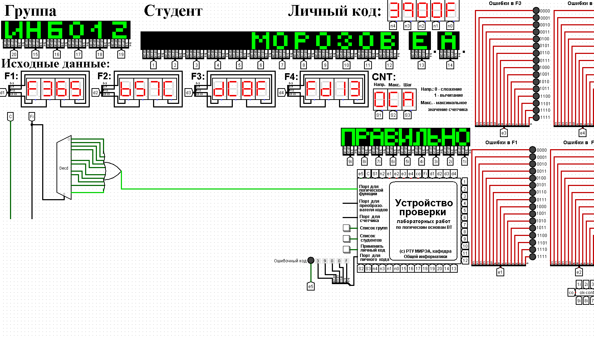
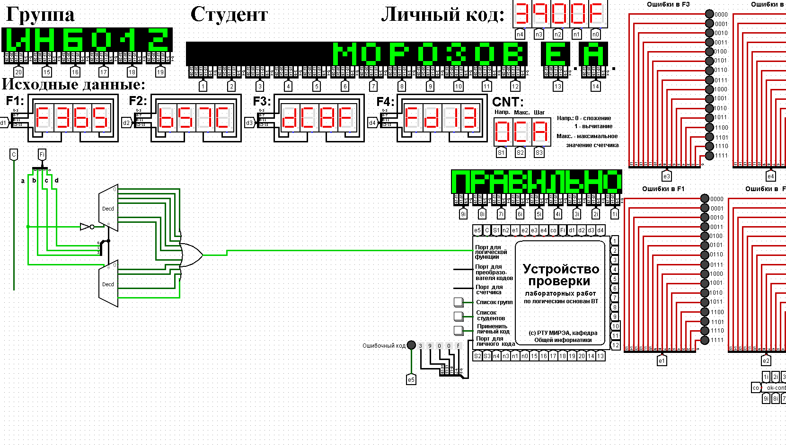
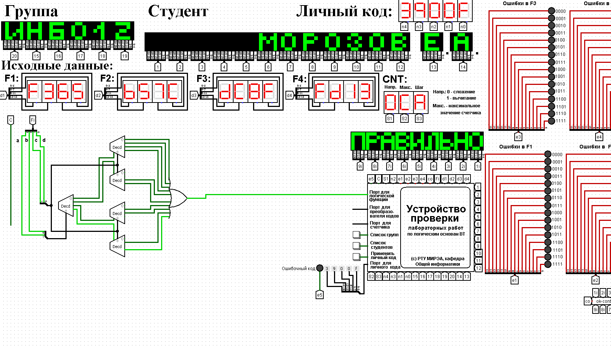

Реализуем функцию, используя дешифратор 4-16 и одну дополнительную схему «или». Количество выходов дешифратора соответствует количеству значений логической функции, поэтому требуется только один такой дешифратор. Подадим значения переменных функции на адресные входы дешифратора: младшую переменную «d» - на младший адресный вход, старшую переменную «a» - на старший адресный вход, прочие переменные – аналогично (на схеме далее переменные подаются на адресные входы дешифратора при помощи шины). В процессе работы на выходах дешифратора (с нулевого по пятнадцатый) будут последовательно возникать единичные значения в соответствии с поступающей на адресные входы комбинацией значений переменных. Выберем лишь те выходы дешифратора, номера которых совпадают с номерами наборов значений переменных, на которых функция равна единице. Объединим эти выходы дешифратора через «или» и получим требуемую реализацию (рисунке 1).
Тестирование показало, что схема работает правильно.
Реализуем функцию, используя дешифраторы 3-8 и необходимую дополнительную логику. Количество выходов у дешифратора 3-8 в два раза меньше количества значений логической функции, поэтому нам потребуется разместить на рабочей области лабораторного комплекса два дешифратора 3-8. Подадим значения трех младших переменных функции на адресные входы обоих дешифраторов: младшую переменную «d» - на младший адресный вход, старшую переменную «b» - на старший адресный вход, переменную «с» - аналогично.
Переменная «а» используется для управления дешифраторами. Когда «а» равна нулю, то должен работать первый дешифратор - он отвечает за первую половину таблицы истинности. Когда «а» равна единице, то должен работать второй дешифратор - он отвечает за вторую половину таблицы истинности. Чтобы это реализовать, переменная «а» должна подаваться на разрешающий вход первого дешифратора через инверсию, а на вход второго - без инверсии.
Для большей наглядности проиллюстрируем сказанное выше рисунком 2.
У первого дешифратора выберем лишь те выходы, чьи номера совпадают с номерами наборов значений переменных, на которых функция равна единице, из первой половины таблицы. У второго дешифратора выберем лишь те выходы, чьи номера совпадают с номерами наборов значений переменных за вычетом 8, на которых функция равна единице, из второй половины таблицы. Объединим выбранные выходы обоих дешифраторов через «или» и получим требуемую реализацию (рисунок 3).
Тестирование подтвердило правильность работы схемы.
Реализуем функцию, используя дешифраторы 2-4 и необходимую дополнительную логику. Количество выходов у дешифратора 2-4 в четыре раза меньше количества значений логической функции, поэтому нам потребуется разместить на рабочей области лабораторного комплекса четыре дешифратора 2-4, которые мы будем называть операционными, а также еще один дешифратор 2-4, который будет управлять первыми четырьмя – назовем его управляющим.
Следует обратить внимание, что количество адресных входов у каждого дешифратора в два раза меньше, чем количество переменных функции, поэтому каждый операционный дешифратор будет отвечать лишь за одну четверть исходной таблицы истинности. Для большей наглядности проиллюстрируем сказанное выше рисунком 4.
Теперь фактически каждый операционный дешифратор отвечает за свою двоичную тетраду в исходной векторной записи логической функции. Выберем у каждого операционного дешифратора лишь те выходы, где у двоичной тетрады стоят единицы. При этом необходимо считать, что нулевой выход соответствует старшему двоичному разряду тетрады.
Объединим выбранные выходы всех операционных дешифраторов через «или» и получим требуемую реализацию (рисунок 5).
Тестирование подтвердило правильность работы схемы.